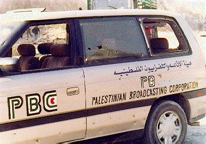
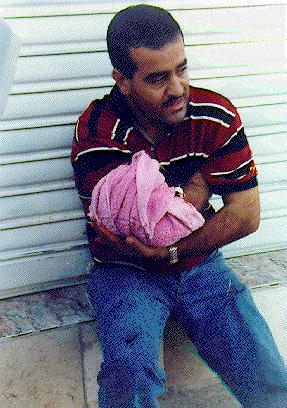
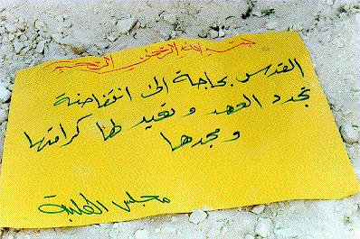

Photo Diary
Day 1: Wednesday 25th September 1996, "Aftermath of the first shootings"

A Palestinian Broadcasting Corporation car is riddled with bullets. Photo by Yasser Darweesh
______________________________________________________________________

An injured man sits in shock against a shop front, clutching a towel to his wound. Photo by Yasser Darweesh
______________________________________________________________________

A placard from the Birzeit University Student Council lies on the ground. It reads, "Jerusalem needs an Intifada that will renew the era and bring back its dignity and glory" Photo by Yasser Darweesh
Click here for NEXT ENTRY
Click here for PHOTO DIARY
INDEX
_______________________________________________________
Website and related material from Birzeit University staff
High resolution photos available by request.
Contact nparry@admin.birzeit.edu.